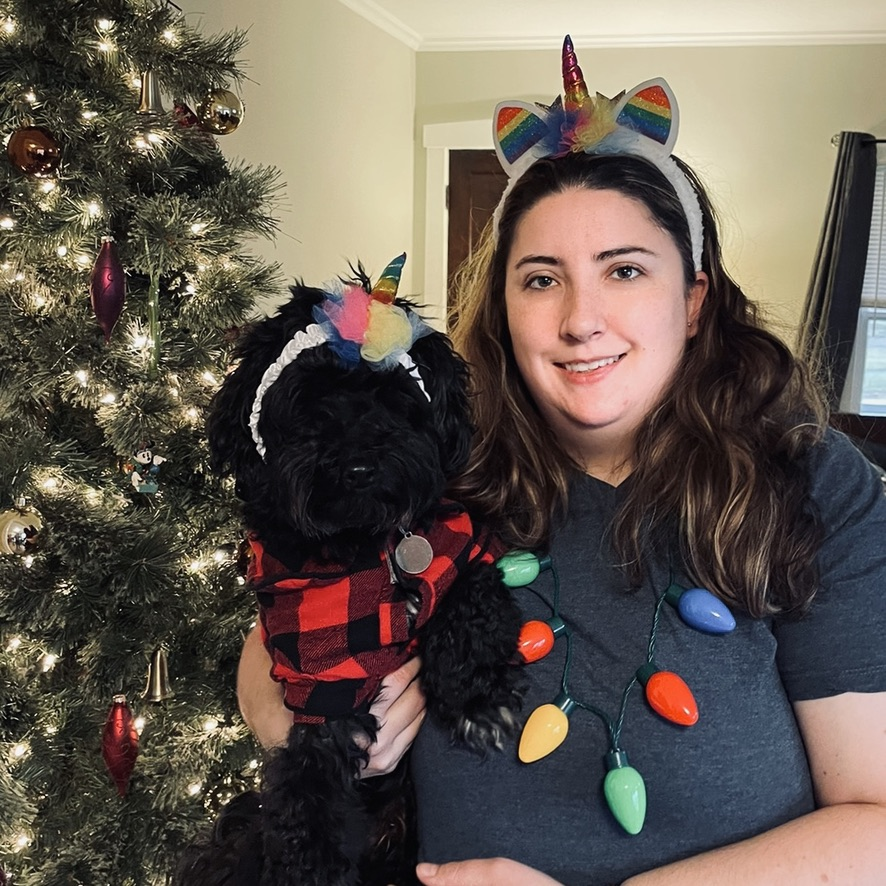
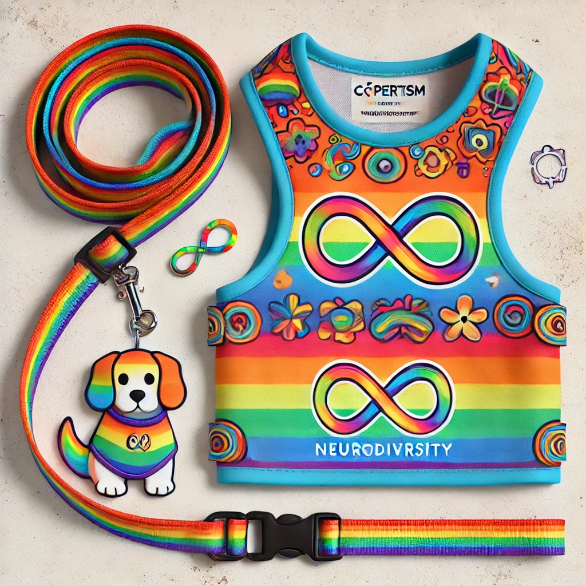
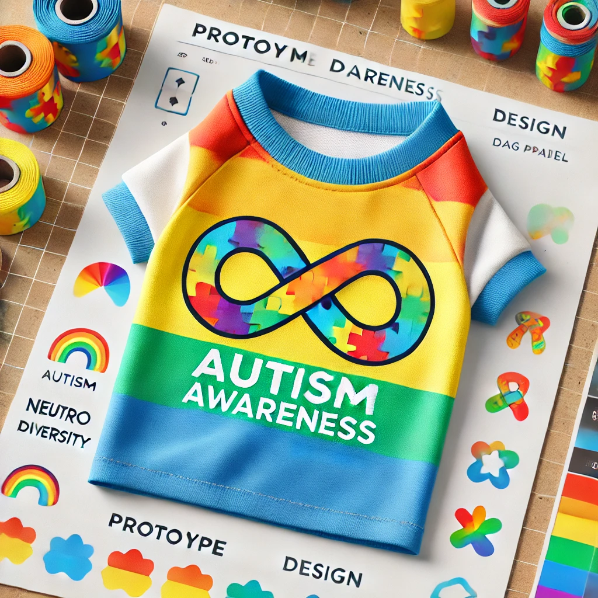

What Is a Neurodiversity Champion?
A Neurodiversity Champion is someone who raises awareness of neurodiversity and helps others appreciate the importance of neurodiverse talents. At C∞perTism, we strive to be those champions, and we’re committed to making a difference.
About C∞perTism
Welcome to C∞perTism, your go-to online shop for dog apparel that embraces neurodiversity and raises awareness for Autism. My name is Shawnna Hann, and I’m the proud owner of this business. As someone on the Autism Spectrum myself, I created this company to celebrate neurodiverse communities and spread awareness in a fun and inclusive way — all with the help of my quirky Havapoo, Cooper.
Cooper is not your average dog. He's a black Havapoo with two white front paws, a huge love for unicorn toys, and a big personality! Cooper can do all kinds of tricks and even uses talking buttons to ask for treats after dinner. With his playful charm and photogenic face, he became the model and inspiration behind this business. His best friend, Rocky, a white Havanese, is always by his side, and together they symbolize unity, inclusion, and support for causes like Black Lives Matter and neurodiversity. The combination of these colors and personalities embodies our mission to embrace everyone, regardless of their differences.
Our logo reflects this mission too. It features a black dog (Cooper!) with a unicorn toy on top of a rainbow infinity symbol. This infinity symbol represents neurodiversity, showing that all minds are unique and worthy of celebration. We’re proud to be the leading company in the USA for neurodiversity-themed dog apparel, and we believe every life matters, just like every dog matters!
We started this journey back in 2022, and since then, we've grown so much, thanks to families like yours who share our passion. If you have a family member on the Autism Spectrum or know someone who does, our shop is designed with you in mind.
New Products in Our Store
Check out our newest items, designed with neuro-inclusivity in mind:
Rainbow Dog Leash Set: Show your pride for neurodiversity with this colorful leash set featuring the rainbow infinity symbol.

Autism Awareness Dog Bowl: Bright, bold, and functional, this dog bowl is perfect for spreading autism awareness.

Dog Shirt for Autism Awareness: Stylish and comfortable, this shirt spreads the message of inclusivity wherever your dog goes.

Our Contribution
We believe in giving back to the community. That’s why 50% of our proceeds go to educational scholarships for people on the autism spectrum, helping them further their education and follow their dreams.
All of our products are proudly made in the USA, and we operate out of beautiful Ann Arbor, Michigan. Join us in celebrating neurodiversity by shopping for your dog at C∞perTism!